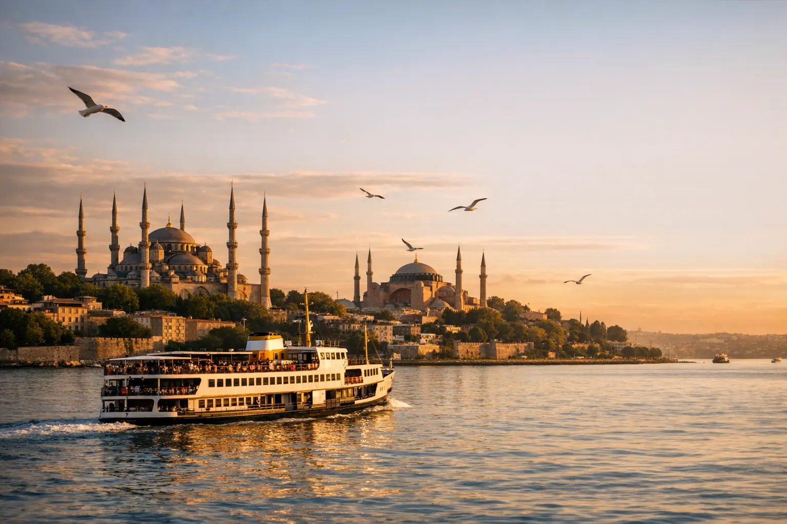

İstanbul'da 5 günde nereleri gezmeli? Planlama rehberi
İstanbul'da beş gün için pratik bir plan: tarihî yerler, Boğaz ve Bursa veya Sapanca'ya günübirlik gezi; nerede konaklayacağınıza dair öneriler ve zaman ile emekten tasarruf ettiren ipuçlarıyla.

جولة خاصة بسائق من إسطنبول
أشهر معالم إسطنبول في يوم واحد: السلطان أحمد وآيا صوفيا والبازار الكبير، ثم غلطة وتقسيم وساحل البوسفور، بسيارة خاصة تنتظرك عند كل محطة.
الجانب الأوروبي يضم أغلب معالم إسطنبول التاريخية. السيارة الخاصة توفر عليك التنقل بين المناطق، لكن منطقة السلطان أحمد نفسها تُزار مشياً، فالمعالم فيها متقاربة.
عشر ساعات لا تكفي لدخول كل شيء، لذلك نرتب معك الأولويات: أي المتاحف تدخل، وأين تكتفي بالصور، ومتى تتوقف للصلاة والغداء.
محطات الجولة
آيا صوفيا والجامع الأزرق وقصر توبكابي وخزان البازيليك، متقاربة مشياً.
أقدم أسواق إسطنبول المسقوفة، للهدايا والحلويات والتوابل.
برج غلطة وشارع الاستقلال وميدان تقسيم.
قصر دولمة بهجة من الخارج أو الداخل، ثم أورتاكوي وجامعها تحت الجسر.
Nasıl işliyor
واسم فندقك أو منطقتك في إسطنبول، وما تحب أن تزوره، عبر واتساب أو النموذج.
نوع السيارة والمسار المقترح وما يشمله السعر وما لا يشمله، قبل أي دفع.
نرسل لك بيانات السائق وموعد الانطلاق من فندقك.
السائق معك طوال الجولة، وفريقنا متاح على واتساب لأي تعديل.
Hemen Rezervasyon Yap
Formu doldurun, WhatsApp hazır bir mesajla açılsın; herhangi bir ödemeden önce yazılı teklif alırsınız.
Sorular ve cevaplar
تكفي لأهم المعالم مع دخول متحف أو اثنين. ومن أراد دخول كل المتاحف على مهل يحتاج يومين.
السائق يوصلك ويساعدك في التنقل، وليس مرشداً سياحياً. وإن أردت شرحاً تاريخياً نرتب لك مرشداً مرخصاً عند الطلب.
تذاكر الدخول غير مشمولة عادةً في سعر السيارة، ونوضّح ذلك في العرض. ويمكن أن نضيفها لك عند الطلب.
Günübirlik Turlar
OYA rehberinden
İstanbul'da beş gün için pratik bir plan: tarihî yerler, Boğaz ve Bursa veya Sapanca'ya günübirlik gezi; nerede konaklayacağınıza dair öneriler ve zaman ile emekten tasarruf ettiren ipuçlarıyla.

İstanbul'dan en popüler günübirlik turlar için pratik bir rehber: Sapanca ve Maşukiye, Bursa ve Uludağ, Adalar, Şile ve Ağva; karşılaştırma tablosu ve günübirlik gezi ile konaklamalı gezi arasında seçim yapmak için ipuçlarıyla.

Yolculuğunuza uymayan genel rakamlar yerine, Türkiye seyahat maliyetinin bileşenlerini ve maliyeti neyin artırıp neyin düşürdüğünü anlatıyoruz; bir haftalık bütçeyi hesaplamanın basit bir yolu ve pratik tasarruf ipuçları da var.
Baştan sona kişisel hizmet
Bize gideceğiniz yeri, tarihleri ve yolcu sayısını söyleyin; kısa süre içinde ayrıntılı bir teklif alın — hiçbir bağlayıcılık olmadan.